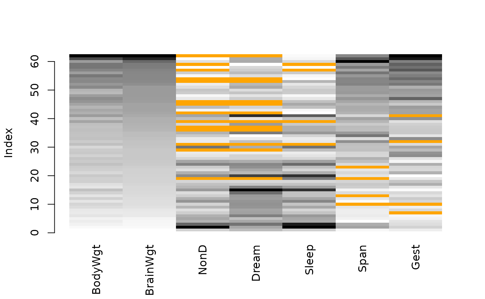

Create a matrix plot, in which all cells of a data matrix are visualized by rectangles. Available data is coded according to a continuous color scheme, while missing/imputed data is visualized by a clearly distinguishable color.
matrixplot( x, delimiter = NULL, sortby = NULL, col = c("red", "orange"), fixup = TRUE, xlim = NULL, ylim = NULL, main = NULL, sub = NULL, xlab = NULL, ylab = NULL, axes = TRUE, labels = axes, xpd = NULL, interactive = TRUE, ... ) # S3 method for data.frame matrixplot( x, delimiter = NULL, sortby = NULL, col = c("red", "orange"), fixup = TRUE, xlim = NULL, ylim = NULL, main = NULL, sub = NULL, xlab = NULL, ylab = NULL, axes = TRUE, labels = axes, xpd = NULL, interactive = TRUE, ... ) # S3 method for survey.design matrixplot( x, delimiter = NULL, sortby = NULL, col = c("red", "orange"), fixup = TRUE, xlim = NULL, ylim = NULL, main = NULL, sub = NULL, xlab = NULL, ylab = NULL, axes = TRUE, labels = axes, xpd = NULL, interactive = TRUE, ... ) # S3 method for default matrixplot( x, delimiter = NULL, sortby = NULL, col = c("red", "orange"), fixup = TRUE, xlim = NULL, ylim = NULL, main = NULL, sub = NULL, xlab = NULL, ylab = NULL, axes = TRUE, labels = axes, xpd = NULL, interactive = TRUE, ... )
Arguments
| x | a matrix or |
|---|---|
| delimiter | a character-vector to distinguish between variables and
imputation-indices for imputed variables (therefore, |
| sortby | a numeric or character value specifying the variable to sort
the data matrix by, or |
| col | the colors to be used in the plot. RGB colors may be specified
as character strings or as objects of class " |
| fixup | a logical indicating whether the colors should be corrected to
valid RGB values (see |
| xlim, ylim | axis limits. |
| main, sub | main and sub title. |
| xlab, ylab | axis labels. |
| axes | a logical indicating whether axes should be drawn on the plot. |
| labels | either a logical indicating whether labels should be plotted below each column, or a character vector giving the labels. |
| xpd | a logical indicating whether the rectangles should be allowed to
go outside the plot region. If |
| interactive | a logical indicating whether a variable to be used for sorting can be selected interactively (see ‘Details’). |
| ... | for |
Details
In a matrix plot, all cells of a data matrix are visualized by
rectangles. Available data is coded according to a continuous color scheme.
To compute the colors via interpolation, the variables are first scaled to
the interval \($[0,1]$\). Missing/imputed values can then be
visualized by a clearly distinguishable color. It is thereby possible to use
colors in the HCL or RGB color space. A simple way of
visualizing the magnitude of the available data is to apply a greyscale,
which has the advantage that missing/imputed values can easily be
distinguished by using a color such as red/orange. Note that -Inf
and Inf are always assigned the begin and end color, respectively, of
the continuous color scheme.
Additionally, the observations can be sorted by the magnitude of a selected
variable. If interactive is TRUE, clicking in a column
redraws the plot with observations sorted by the corresponding variable.
Clicking anywhere outside the plot region quits the interactive session.
Note
This is a much more powerful extension to the function imagmiss
in the former CRAN package dprep.
iimagMiss is deprecated and may be omitted in future versions of
VIM. Use matrixplot instead.
References
M. Templ, A. Alfons, P. Filzmoser (2012) Exploring incomplete data using visualization tools. Journal of Advances in Data Analysis and Classification, Online first. DOI: 10.1007/s11634-011-0102-y.
Examples
data(sleep, package = "VIM") ## for missing values x <- sleep[, -(8:10)] x[,c(1,2,4,6,7)] <- log10(x[,c(1,2,4,6,7)]) matrixplot(x, sortby = "BrainWgt")#> Warning: variable 'Dream' contains infinite values## for imputed values x_imp <- kNN(sleep[, -(8:10)]) x_imp[,c(1,2,4,6,7)] <- log10(x_imp[,c(1,2,4,6,7)]) matrixplot(x_imp, delimiter = "_imp", sortby = "BrainWgt")#> Warning: variable 'Dream' contains infinite values